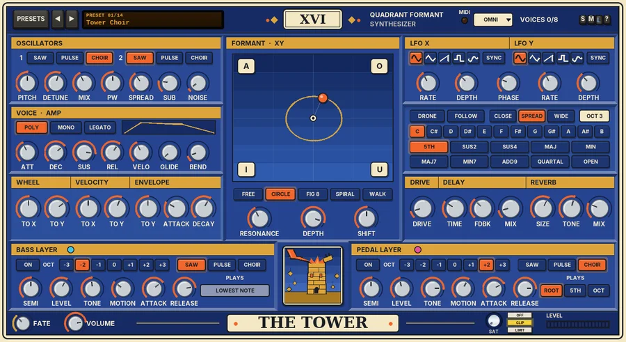

G Tower
Card XVI of the GFX Tarot series: a polysynth built around a quadrant formant pad, with bass and pedal layers and a drone that plays a chord by itself.

Overview
G Tower is THE TOWER, card XVI of the GFX Tarot series: sudden upheaval, the structure shattering so that something truer can be built. It is an eight-voice polysynth whose heart is a quadrant formant filter. An XY pad holds a set of vocal formants in each of its four corners - the vowels A, E, I, O and U, or STONE (dark), GLASS (bright), STORM (nasal) and CHOIR - and the point on the pad morphs smoothly between them. Two LFOs fly the point around the pad along a PATH: a circle, a figure of eight, a spiral or a random walk, so the sound keeps speaking.
Each voice has its own formant filter, so every note can sit at its own place on the pad and chords stay clean. Beside the main voices sit two mono layers, BASS and PEDAL, each with its own wave, tone and place on the pad. And with DRONE on, the Tower plays a chosen chord by itself, with no MIDI at all, while the LFOs keep it moving. DRIVE, a ping-pong DELAY and a big REVERB finish the sound, and FATE lets the cards reshuffle a little as it plays.
Reach for it for
- Choirs, chants and talking pads that keep changing vowel
- Self-playing drones and beds under a track
- Pedal-point pieces: play over a held bass and fifth
- Growling formant basses and mono leads (MONO / LEGATO)
- Slow, evolving textures for film and ambient music
Loading and playing it
- Insert G Tower on a new track. It is an instrument: it makes its own sound and needs no audio input.
- Arm the track for recording and set its input to your MIDI keyboard, or put a MIDI item on the track.
- Play. The point flies around the pad and the vowels change under your notes. VOICES in the header shows how many of the eight voices are sounding, and the MIDI light flashes when a note arrives.
- Click a corner's name on the pad to choose its formant set, and drag on the pad to move the centre the LFOs orbit.
- If you play on a particular MIDI channel, click OMNI in the header and choose it.
Using it as a self-playing drone
- Switch DRONE on. The Tower starts playing the chosen chord by itself - no MIDI, no transport needed. It swells in gently.
- Pick a ROOT (C to B), a CHORD and a voicing (CLOSE, SPREAD or WIDE), and drag the OCT field up or down to set the register. Changing any of them glides the voices to the new chord with no clicks.
- Switch on the BASS LAYER and the PEDAL LAYER for a low root and a high root, fifth or octave above it.
- Choose a PATH and slow the LFOs right down (0.05 - 0.2 Hz) for a drone that drifts rather than wobbles. Add REVERB and a little FATE so it never quite repeats.
- To play over it: hold notes and they take over while held (the drone swells out and back in when you let go). With FOLLOW on, the notes you play do not sound - instead the last one you play becomes the drone's root, so you can change key from the keyboard or a MIDI item.
Controls
The header
- PRESETS
- Opens the full preset list.
- ◄ / ►
- Step to the previous or next preset (wrapping round).
- Preset display
- Shows the preset number and name. Click it for the preset list too.
- XVI
- The card's numeral.
- MIDI
- Flashes when a note arrives.
- OMNI / CH
- The MIDI channel: click it and choose Omni (all channels, the default) or 1 - 16.
- VOICES
- How many of the eight voices are sounding.
- S / M / L
- Panel size: small, medium or large. The panel also scales to fit the plugin window.
- ?
- Opens a pop-up with the design credit, the GFX website address and the address of this manual. Click anywhere to close it.
OSCILLATORS
- 1: SAW / PULSE / CHOIR
- The wave of oscillator 1. CHOIR is a buzzy stack of five saws, spread by SPREAD. CHOIR by default.
- 2: SAW / PULSE / CHOIR
- The wave of oscillator 2 (SAW by default).
- PITCH
- Oscillator 2's pitch, -24 to +24 semitones (0 by default).
- DETUNE
- Oscillator 2's fine tuning, -50 to +50 cents (+7 by default).
- MIX
- The balance from oscillator 1 (0%) to oscillator 2 (100%); 40% by default.
- PW
- The pulse width for PULSE, 5 - 95% (50%).
- SPREAD
- How far the five CHOIR saws are spread, 0 - 60 cents (22 by default).
- SUB
- A sub-oscillator one octave below oscillator 1, 0 - 100% (20%).
- NOISE
- Noise, 0 - 100% (4%): a little breath in the formants.
VOICE · AMP
- POLY / MONO / LEGATO
- POLY plays up to eight voices. MONO plays one, retriggering on every note. LEGATO plays one and only retriggers when you lift off between notes.
- Envelope display
- Draws the shape of the amp envelope.
- ATT / DEC / SUS / REL
- The amp envelope: attack 1 - 5000 ms (30), decay 5 - 8000 ms (800), sustain 0 - 100% (85%), release 5 - 10000 ms (600).
- VELO
- How much velocity changes the level, 0 - 100% (40%).
- GLIDE
- Portamento from the last note played, 0 - 2000 ms (0 = off).
- BEND
- The pitch-bend range, 0 - 24 semitones (2).
WHEEL, VELOCITY and ENVELOPE
Ways to move the point on the pad as you play. Velocity and the envelope give each note its own place on the pad.
- WHEEL: TO X / TO Y
- How far the mod wheel moves the point across (X) and up (Y), -100 to +100% (0% and +40% by default).
- VELOCITY: TO X / TO Y
- How far a note's velocity moves its point, -100 to +100% (0% and +15%).
- ENVELOPE: TO Y
- A formant envelope on every note that moves its point up the pad (or down, if negative) and back, -100 to +100% (0% by default).
- ATTACK / DECAY
- The formant envelope's attack, 1 - 5000 ms (10), and decay, 10 - 8000 ms (600).
FORMANT · XY
- The pad
- X runs left to right, Y bottom to top. The flame-coloured point is where the formants are now, with a short trail; the small ring is the centre the LFOs orbit, and the pad draws the path they fly. Drag anywhere on the pad to move the centre; double-click to put it back in the middle.
- Corners
- Click a corner's name to choose its formant set: A, E, I, O, U, STONE (dark, low, chesty), GLASS (bright, high), STORM (narrow, nasal) or CHOIR (open, with a singer's ring). A, O, I and U by default (top left, top right, bottom left, bottom right). Between the corners, every peak's frequency, width and level morph smoothly.
- B and P dots
- When the BASS or PEDAL layer is on, its place on the pad is shown as a ring (drag it to move the layer) with a lettered dot where it is now.
- FREE / CIRCLE / FIG 8 / SPIRAL / WALK
- The PATH. FREE: the two LFOs as set. CIRCLE (the default): Y follows X at the PHASE offset - circles and ellipses, or diamonds with the triangle. FIG 8: Y runs at twice X's rate; PHASE 90 draws the eight. SPIRAL: a circle that breathes in and out over eight turns. WALK: a smooth random walk. In CIRCLE, FIG 8 and SPIRAL, Y takes its rate from X; in WALK both LFOs wander smoothly at their own rates, whatever their shape.
- RESONANCE
- Sharpens or softens every formant peak, 0 - 100% (40%). Low values are soft and breathy, high values ring and whistle.
- DEPTH
- The formants against the raw oscillators, 0 - 100% (90%).
- SHIFT
- Moves all the formant peaks up or down, -12 to +12 semitones (0): smaller or larger throats.
LFO X and LFO Y
- Shape keys
- Sine, triangle, saw, sample-and-hold or smooth random, drawn on the keys (sine by default).
- SYNC
- Free or tempo-synced rate (free by default).
- RATE
- Free: 0.01 - 20 Hz (0.2 Hz by default). Synced: 8 bars, 4 bars, 2 bars, 1 bar, 1/2, 1/2T, 1/4, 1/4T, 1/8, 1/8T, 1/16 or 1/16T, locked to the project's beat while it plays (1 bar by default).
- DEPTH
- How far the LFO moves the point, 0 - 100% (35%).
- PHASE
- The phase of Y against X, 0 - 360 degrees (90).
DRONE
- DRONE
- The Tower plays the chord below by itself (off by default). Notes you play take over while held; the drone swells out and comes back when you let go. Drone tones swell in over at least 300 ms and out over at least 800 ms, whatever the amp envelope.
- FOLLOW
- With DRONE on, a played note does not sound but becomes the drone's root; the ROOT key that is lit follows it.
- CLOSE / SPREAD / WIDE
- The voicing. CLOSE keeps the chord tight; SPREAD lifts the second tone an octave; WIDE lifts another one too. SPREAD by default.
- OCT
- The register, 1 - 5: drag the field up or down. OCT 3 (the default) puts the root in the octave from C3 (MIDI note 48).
- C ... B
- The ROOT (C by default).
- CHORD
- 5TH (root, fifth and octave, the default), SUS2, SUS4, MAJ, MIN, MAJ7, MIN7, ADD9, QUARTAL (stacked fourths) or OPEN (root, fifth, octave and twelfth).
BASS LAYER and PEDAL LAYER
Two mono drone voices beside the main voices, each with its own wave, tone and place on the pad. They sound while notes are held, and always in DRONE mode. The NOTE readout shows the note each one is playing.
- ON
- Switches the layer on (both off by default).
- OCT
- Transposes the layer, -3 to +3 octaves (BASS -2, PEDAL +2 by default).
- SAW / PULSE / CHOIR
- The layer's wave (BASS SAW, PEDAL CHOIR).
- SEMI
- Transposes it by -12 to +12 semitones (0).
- LEVEL
- 0 - 100% (BASS 60%, PEDAL 45%).
- TONE
- A 12 dB low-pass filter, 60 Hz - 12 kHz (BASS 800 Hz, PEDAL 5 kHz).
- MOTION
- How much of the LFOs' orbit the layer's point shares, 0 - 100% (BASS 30%, PEDAL 60%). At 0% it stays exactly where its ring is.
- ATTACK / RELEASE
- A slow swell in and out, 10 - 10000 ms (BASS 1200 / 2500 ms, PEDAL 1500 / 3000 ms).
- PLAYS
- BASS always plays the LOWEST NOTE held (or the drone's root). PEDAL plays the ROOT, the 5TH or the OCT(ave) above it (ROOT by default).
DRIVE, DELAY and REVERB
- DRIVE
- Stone crumble, 0 - 100% (10%): a biased soft clip that warms at low settings and crumbles into grit near the top.
- TIME
- The stereo ping-pong delay, in tempo divisions: 1/2, 1/4 D, 1/4 (the default), 1/4 T, 1/8 D, 1/8, 1/8 T or 1/16.
- FDBK
- Delay feedback, 0 - 90% (30%).
- MIX (DELAY)
- 0 - 100% (12%).
- SIZE
- The reverb's size and length, 0 - 100% (60%).
- TONE
- The reverb's brightness, 0 - 100% (55%).
- MIX (REVERB)
- 0 - 100% (25%).
The foot of the card
- FATE
- The series' drift, 0 - 100% (35% by default): the cards reshuffle a little. The LFO rates, the phase between them and their depths wander, each corner's formant set slides a little in frequency, the pad centre drifts, and now and then the drone's voicing turns over (an inner tone moves up an octave). The tuning wanders gently and each note lands slightly differently in tune. At 0% everything stays where you set it.
- VOLUME
- Output level, -24 to +6 dB.
- SAT
- Band saturation on the way out: only the lows and highs are saturated (the mids stay clean), with a soft curve that loosens as the level rises. 0% by default.
- OFF / CLIP / LIMIT
- The final stage: nothing, a soft clipper at -0.3 dBFS (no latency), or a lookahead limiter that holds the peaks at -0.3 dBFS (3 ms latency, compensated by REAPER). CLIP by default. While the output clips, the CLIP key flashes red.
- LEVEL
- The output level meter.
Knobs: drag up or down (Shift for fine moves), use the mouse wheel, and double-click to reset a knob to its default.
MIDI
G Tower plays from MIDI notes, with velocity, on the chosen channel. Pitch bend follows BEND, CC 1 is the mod wheel, CC 64 the sustain pedal, and CC 120 and CC 123 (all notes off) release everything.
Presets
A preset starts from Init and changes a few things. FATE and the MIDI channel are left as they are; loading a preset releases any notes that are sounding.
- Tower Choir
- Init: a choir and a saw through A, O, I and U, circling slowly.
- Pedal Point
- Play over a held fifth: the PEDAL layer on the fifth two octaves up and the BASS layer an octave down, with a dotted echo.
- Low Tower
- A self-playing drone on a low C fifth: dark saws through STONE, O and U on a slow random walk, with the bass layer, drive and a huge reverb.
- Storm Chant
- Two choirs an octave apart through nasal STORM corners on a figure of eight, with the formant envelope lifting every note.
- Glass Spire
- Bright pulse and saw an octave apart through GLASS, I and E on a spiral, shifted up, with echo and a bright reverb.
- Stone Throat
- A LEGATO growl with glide: saw and pulse an octave apart, lots of sub, dark corners, and the wheel, velocity and a fast envelope moving the vowel.
- Monastery
- A slow self-playing OPEN chord on A, with choirs, both layers, a very slow circle and a long, wet reverb.
- Babel
- A wide QUARTAL drone on F with many detuned choir voices, two free LFOs, both layers and a big reverb.
- Ruin Drone
- A D fifth drone with noisy saws, STONE and STORM corners on a slow spiral, high resonance, long swells and a huge dark reverb.
- Revelation
- Choirs starting low on the pad that open up slowly on every note (a long formant envelope), with slow attacks and releases.
- Desert Tower
- A SUS4 drone on E with FOLLOW on: play a note to move the root. Pulse waves, a figure of eight, echo and both layers.
- Dark Choir
- A minor drone on B: low choirs, shifted down, on a random walk through O, U, STONE and CHOIR, with the bass layer.
- Thunder Bass
- A MONO bass with a little glide: saw, pulse and heavy sub through dark corners, a snappy formant envelope, drive and the bass layer an octave down.
- Rebuild
- An ADD9 drone on G with FOLLOW, the LFOs synced to two bars, a half-note echo and the pedal layer.
Tips
- Choose corners that contrast - a dark set against a bright one - and the movement on the pad becomes much more audible.
- Turn the LFO DEPTHs down and use the mod wheel (WHEEL TO Y) to "speak" the vowels by hand.
- A little VELOCITY TO Y makes harder notes brighter and more open, like a singer pushing.
- For a drone, keep the LFOs below about 0.2 Hz and RESONANCE moderate; high resonance with slow movement gives whistling, overtone-singing effects.
- Give the BASS layer a low MOTION and the PEDAL a high one, so the bottom stays steady while the top sings.
- Set FATE to 0 for a steady, repeatable sound; turn it up for a drone that keeps changing on its own.
File: gfx-g-tower.jsfx